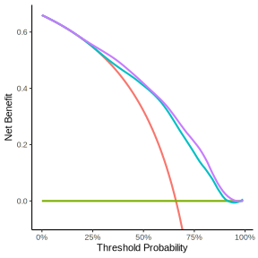
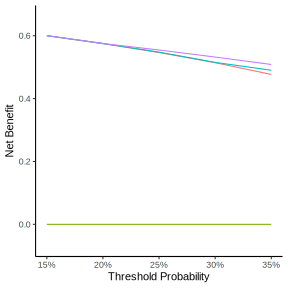
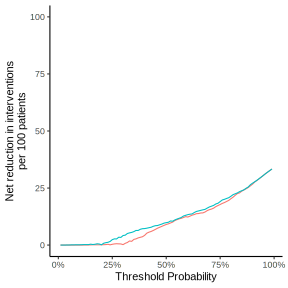

library(Hmisc)
library(dplyr)
library(tibble)
getHdata(acath)
acath <- subset(acath, !is.na(choleste))Additional Benefit of a New Marker
Prediction Model might gain accuracy if you’ll add more relevant features to existing models, but many times it’s not obvious what is the additional value of additional feature and how to quantify it in terms of Decision Making. The post Decision curve analysis for quantifying the additional benefit of a new marker by Emily Vertosick and Andrew Vickers show a simple example (the code presented here is almost identical to the original code presented in the link).
Preparing the Data
Loading the Data with Hmisc
Fitting Logistic Regressions with rms
library(rms)
pre <- lrm(sigdz ~ rcs(age,4) * sex, data = acath)
pre_pred <- predict(pre, type='fitted')
post <- lrm(sigdz ~ rcs(age,4) * sex +
rcs(choleste,4) + rcs(age,4) %ia% rcs(choleste,4), data = acath)
post_pred <- predict(post, type='fitted')
acath_pred <- bind_cols(
acath,
pre_pred |> enframe(name = NULL, value = "pre"),
post_pred |> enframe(name = NULL, value = "post")
)Conventional Decision Curve
library(dcurves)
dca_prepost <- dca(
sigdz ~ pre + post,
data = acath_pred,
label = list(
pre = "Age and Sex",
post = "Age, Sex and Cholesterol"))
dca_prepost |>
plot(smooth = TRUE) +
theme_classic() +
theme(legend.position = "none")
library(rtichoke)
library(plotly)
performance_data_dc <-
prepare_performance_data(
probs = list(
"Age and Sex" =
acath_pred$pre,
"Age, Sex and Cholesterol" =
acath_pred$post
),
reals = list(acath_pred$sigdz)
)
performance_data_dc |>
plot_decision_curve(
color_values =
c("#00BFC4", "#C77CFF"),
size = 350
) |>
plotly::layout(
yaxis = list(
range =
c(-0.07, 0.7)
)
)Specific Range of Probability Thresholds
library(dcurves)
dca_prepost_15_35 <- dca(
sigdz ~ pre + post,
data = acath_pred,
thresholds = seq(0.15, 0.35, by = 0.05),
label = list(
pre = "Age and Sex",
post = "Age, Sex and Cholesterol")) |>
plot(type = 'net_benefit',
smooth = FALSE,
show_ggplot_code = FALSE)
dca_prepost_15_35 +
theme_classic() +
theme(legend.position = "none")
performance_data_dc |>
rtichoke::plot_decision_curve(
color_values = c("#00BFC4", "#C77CFF"),
min_p_threshold = 0.15,
max_p_threshold = 0.35,
size = 350
) |>
plotly::layout(
yaxis = list(range =
c(-0.07, 0.7))
) Interventions Avoided
dca_prepost |>
net_intervention_avoided() |>
plot(type = 'net_intervention_avoided',
smooth = FALSE) +
theme_classic() +
theme(legend.position = "none")
performance_data_dc |>
rtichoke::plot_decision_curve(
color_values = c("#F8766D", "#00BFC4"),
type = "interventions avoided",
size = 350
) |>
plotly::layout(
yaxis = list(range =
c(-10, 100))
)Conventional and Interventions Avoided Combined (rtichoke code)
performance_data_dc |>
plot_decision_curve(
color_values =
c("#00BFC4", "#C77CFF"),
type = "combined",
size = 500
)